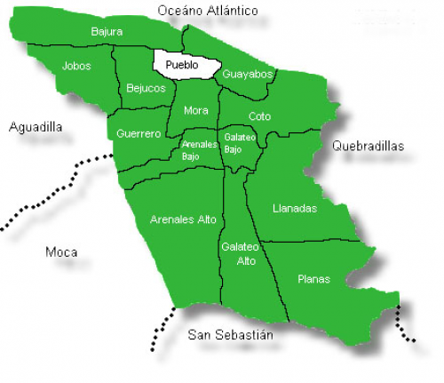

HISTORIA
Su nombre proviene en honor a la Reina Isabel la Católica de España. El origen del pueblo de Isabela se remonta al establecimiento de grupos nativos en la región, destacando el cacicazgo de Mabodomaca. Por otro lado, en estas tierras se hallaba el hato San Antonio de la Tuna, cerca de las riberas del Río Guajataca. Alrededor del año 1725, el gobernador José Antonio de Mendizábal y Azares autorizó la organización de un poblado en el hato. Se estima que para dicha encomienda, el lugar ya contaba con una ermita en honor a San Antonio y una pequeña aldea en sus alrededores. Para fines del siglo XVIII y según Fray Iñigo Abbad y Lasierra, el pueblo ya contaba con una iglesia, más de 60 viviendas y cerca de 1,200 habitantes en todo el territorio. Su economía dependía principalmente de la ganadería. Pero alrededor de 1818, los vecinos del lugar otorgaron poder a Pablo Corchado para que solicitara del gobernador Salvador Meléndez, autorización para trasladar la población a una nueva sede más cercana a la costa del mar y que llevaría el nombre de Isabela, en honor a la Reina Isabel de Castilla. Meléndez aprobó la solicitud y el nuevo pueblo se fundó el 21 de mayo de 1819. En el nuevo lugar se fomentó el cultivo de la caña de azúcar, café, tabaco y frutos menores.